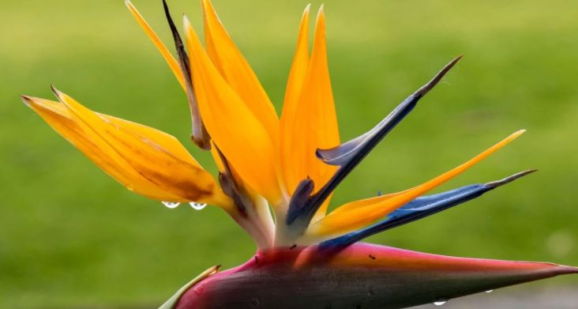

Bunga bird of paradise atau di Indonesia dikenal dengan nama bunga cendrawasih merupakan bunga dengan kesan eksotik yang berasal dari Afrika Selatan. Namanya sendiri diambil dari kemiripan warnanya dengan burung eksotis tersebut.
Ternyata, tidak terlalu sulit apabila kamu ingin menanam bunga cantik ini halaman rumah. Bagaimana caranya? Simak ulasan berikut.
1. Syarat Tumbuh Bunga
Sebelumnya kamu perlu mengetahui syarat tumbuhnya bunga cendrawasih ini terlebih dahulu sebelum menanamnya. Jika kamu memutuskan untuk menanamnya di tempat yang teduh, pastikan bahwa nantinya tetap terkena sinar yang cukup dengan drainase yang baik dan memiliki tekstur seperti tanah liat. Penanaman di tempat teduh akan membuat bunga yang muncul menjadi lebih sedikit karena bunga cendrawasih akan mekar dengan baik jika mendapatkan sinar matahari yang cukup.
2. Menyiapkan Bibit
Untuk budidaya bunga bird of paradise, maka bisa memulainya dengan menyiapkan bibit yang akan ditanam. Apabila kamu tidak sabar menunggunya berbunga, sebenarnya bisa saja langsung membeli tanaman yang sudah dewasa.
Dalam prosesnya, memilih benih yang bagus sendiri dapat dilihat dari teksturnya. Apabila masih segar maka ini menandakan bahwa benih mempunyai kualitas bagus.
Jika sudah mendapatkannya, maka rendam benih tersebut ke dalam air selama kurang lebih 3 hari. Pada proses ini, jangan lupa untuk mengganti air rendaman secara berkala.
3. Menyiapkan Media Tanam
Cara menanam bunga bird of paradise yaitu gali tanah dengan kedalaman sekitar 35 cm jika di luar ruangan. Karena bunga cendrawasih bisa tumbuh dengan lebar mencapai 4,5 meter lebih dan ketinggian sekitar 6 meter jika ditempatkan di tanah terbuka. Sedangkan jika menggunakan pot maka pilihlah pot tanah liat.
4. Perawatan Bunga Cendrawasih
Terdapat beberapa hal yang perlu diperhatikan dalam perawatan bird of paradise. Dimana perlu menyiramnya sebanyak 2 minggu sekali atau bisa kurang pada musim dingin. Sementara pemberian pupuk diberikan sebanyak 2 kali dalam seminggu.